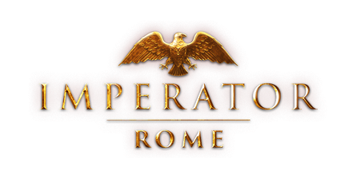

Formable Nations: Reworked
- 200+ Formable Nations
- Reworked Vanilla Nations
- Reworked Colonial Nations
- Custom Missions
- Custom Events
Multiplayer Reworked
- A mod focused on improving and balancing the Multiplayer experience for small groups
- Intended for personal use but available to the public
No Holy Roman Empire
- Disables the Holy Roman Empire mechanic
Restore the Holy Roman Empire
- Submod for No Holy Roman Empire that allows you to form Holy Roman Empire without HRE system
Custom Nation Pack
- Allows players to create Custom Nations from the start of the game
- Adds more flag shapes
- Adds more flag colors
Single Player Magic
- This mod is intended for personal use but is public for others to use
- Adds various cheats and effects that help players to roleplay or map-paint in an SP or MP campaign.
Religious Freedom
- Allows any country to switch to any dominant religion
- Adds 20+ custom religions
Subject Policies
- Adds unique diplomacy options targeting Personal Unions, Vassals, Marches, and Colonies which allow you to reduce Libery Desire or other negative subject traits at a significant cost to various values
- Reworked vassal system
Great Claims
- Great Claims is a mod that adds a simple Great Power interaction where you can demand entire bordering regions of another nation as a significant cost
- Highly effective against nations such as Russia, Qing, and other nations with long borders.
Age of Industrialization
- Adds a new age following the Age of Revolutions that focuses on Industrialization and ends the Revolution system
- Custom nation-specific age bonuses
No Holy Roman Empire - Extended Timeline
- This mod functions the same as No Holy Roman Empire but is intended for the overhaul 'Extended Timeline'
- Archived due to lack of desire to follow Extended Timeline development ~ Might update eventually.
No Holy Roman Empire - Voltaire's Nightmare
- This mod functions the same as No Holy Roman Empire but is intended for the overhaul 'Voltaire's Nightmare'
- Archived due to lack of desire to follow Voltaire's Nightmare development ~ Might update eventually.
Fall of Islam
Wealth of Nations
- Wealth of Nations is a total overhaul that adds unique history based on personal interests.
Planned Mods for Europa Universalis IV
This is a list of mods that are either ideas, or entirely planned out, most of these will most likely become a mod. It has been put into a dropdown menu for convenience.
View Planned Mods

Formable Nations: Reworked

From the deepest part of my heart, I thank you greatly for taking an interest in my mod development.
Formable Nations: Reworked
From the deepest part of my heart, I thank you greatly for taking an interest in my mod development.